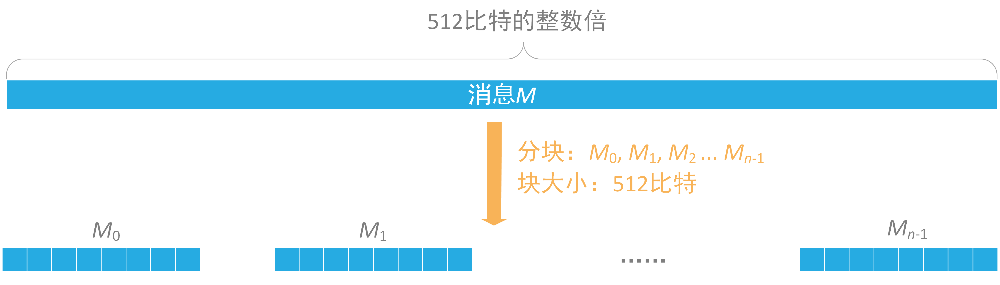
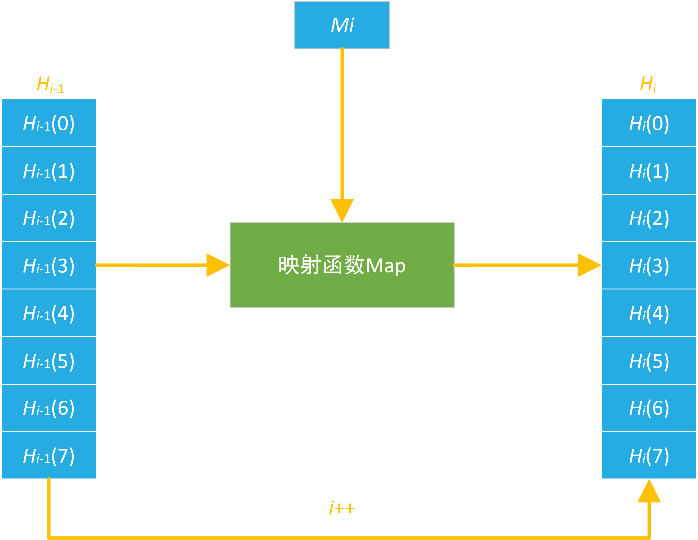
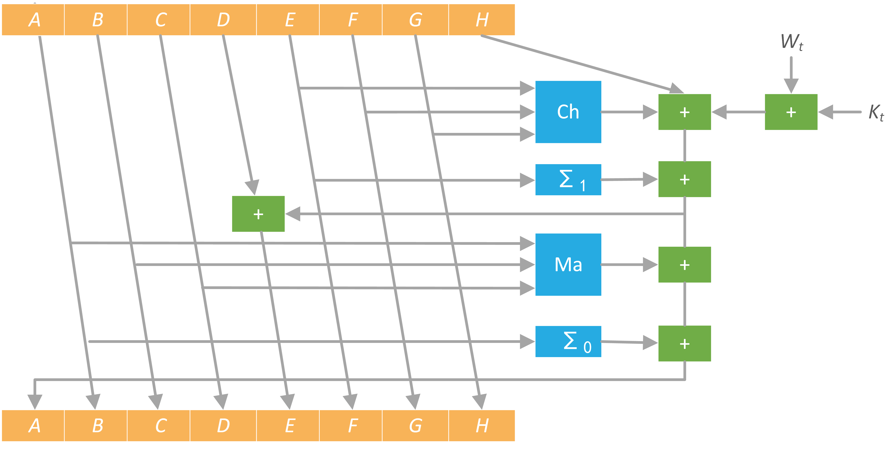

本实验支持自定义明文进行SHA-256 Hash运算，且支持两种方式：PC端Hash和智能卡端Hash。
对于PC端，本实验支持消息长度可变的Hash运算，且可显示Hash过程中关键步骤的中间值；对于智能卡端，本实验支持消息长度在
以下为本实验的重要提示：
下面我们对SHA-256示例卡的APDU指令进行说明，SHA-256示例卡的Command APDU如下：
CLA |
INS |
P1 |
P2 |
Lc/Le |
Data |
功能 |
00 |
42 |
00 |
00 |
Lc |
Lc字节消息 |
SHA-256 Hash |
00 |
C0 |
00 |
00 |
Lc |
读取Hash结果 |
注：上表中的数字均为16进制表示。
Response APDU的SW1、SW2我们定义如下：
SW1 |
SW2 |
状态 |
90 |
00 |
成功 |
61 |
xx |
有 “xx” 字节数据可读取 |
6E |
00 |
CLA错误 |
6D |
00 |
INS错误 |
6B |
00 |
P1或P2错误 |
67 |
00 |
Lc或Le错误 |
注：上表中的数字均为16进制表示。
我们对卡内的指令进行说明，用Message表示待Hash消息，令：
Message=
那么我们要发送的完整APDU指令顺序为：
1）智能卡SHA-256算法Hash
当加密状态正常时，会返回
2）读取Hash值
学员可切换至“Smart Card”页面，尝试与智能卡发送指令以进行学习。此处需要注意，当插入我们配套的读卡器后，右侧交互栏的读卡器列表将有一项值为“ACS ACR1281 1S Dual Reader ICC 0”的元素，选择该项，然后在“Smart Card”页面的“Command （Hex）”文本框内输入命令，并点击 “Send” 按钮，即可发送APDU指令给智能卡。智能卡的返回数据将显示在“Receive （Hex）”文本框内。
SHA-256是SHA-2下细分出的一种算法。SHA-2，名称来自于安全散列算法2（英语：Secure Hash Algorithm 2）的缩写，一种密码散列函数算法标准，由美国国家安全局研发，属于SHA算法之一，是SHA-1的后继者。 SHA-2下又可再分为六个不同的算法标准，包括了：SHA-224、SHA-256、SHA-384、SHA-512、SHA-512/224、SHA-512/256。 这些变体除了生成摘要的长度 、循环运行的次数等一些微小差异外，算法的基本结构是一致的。 本实验以SHA-2算法中的SHA-256为例，进行介绍。
SHA-256算法主要包括
SHA-256算法中用到了8个Hash初值以及64个Hash常量。
其中，SHA-256算法的8个Hash初值如下（16进制表示）：
0x6A09E667
0xBB67AE85
0x3C6EF372
0xA54FF53A
0x510E527F
0x9B05688C
0x1F83D9AB
0x5BE0CD19
用到的64个常量 $K_i$ 如下（16进制表示）：
0x428A2F98 71374491 B5C0FBCF E9B5DBA5
0x3956C25B 59F111F1 923F82A4 AB1C5ED5
0xD807AA98 12835B01 243185BE 550C7DC3
0x72BE5D74 80DEB1FE 9BDC06A7 C19BF174
0xE49B69C1 EFBE4786 0FC19DC6 240CA1CC
0x2DE92C6F 4A7484AA 5CB0A9DC 76F988DA
0x983E5152 A831C66D B00327C8 BF597FC7
0xC6E00BF3 D5A79147 06CA6351 14292967
0x27B70A85 2E1B2138 4D2C6DFC 53380D13
0x650A7354 766A0ABB 81C2C92E 92722C85
0xA2BFE8A1 A81A664B C24B8B70 C76C51A3
0xD192E819 D6990624 F40E3585 106AA070
0x19A4C116 1E376C08 2748774C 34b0BCB5
0x391C0CB3 4ED8AA4A 5B9CCA4F 682E6FF3
0x748F82EE 78A5636F 84C87814 8CC70208
0x90BEFFFA A4506CEB BEF9A3F7 C67178F2
SHA-256算法中的预处理就在消息 $M$ 后面补充需要的信息，使整个消息满足指定的结构。信息的预处理分为两个步骤：附加填充比特和附加长度。
填充是这样进行的：先补第一个比特为1，然后都补0，直到长度满足对512取模后余数是448。以信息 “abc” 为例显示补位的过程。a,b,c对应的ASCII码分别是97,98,99，于是原始信息的二进制编码为：$01100001 01100010 01100011$。
1）补位第一步，首先补一个 “1”： $0110000101100010 01100011 1$，
2）补位第二步,补423个 “0”：$01100001 01100010 01100011 10000000 00000000 \cdots 00000000$。
附加长度值就是将原始数据（第一步填充前的消息）的长度信息补到已经进行了填充操作的消息后面。SHA-256用一个64位的数据来表示原始消息的长度。消息 “abc”，3个字符，占用24个比特。
因此，填充后的消息就变为（16进制格式）：
\begin{multline} \begin{split} &61626380\quad 00000000\quad 00000000\quad 00000000\\ &00000000\quad 00000000\quad 00000000\quad 00000000\\ &00000000\quad 00000000\quad 00000000\quad 00000000\\ &00000000\quad 00000000\quad 00000000\quad 00000018\\ \end{split} \end{multline}SHA-256散列函数中涉及的操作全部是逻辑的
其中：
逻辑运算 |
含义 |
$\wedge$ |
按位 “与” |
$\neg$ |
按位 “补” |
$\oplus$ |
按位 “异或” |
$S^n$ |
循坏右移$n$个比特 |
$R^n$ |
右移$n$个比特 |

图1 填充后消息分块
假设消息 $M$ 可以被分解为 $n$ 个块，于是整个算法需要做的就是完成 $n$ 次迭代，$n$ 次迭代的结果就是最终的Hash值，即256比特的数字摘要。
一个256-比特的摘要的初始值 $H_0$，经过第一个数据块进行运算，得到 $H_1$，即完成了第一次迭代， $H_1$ 经过第二个数据块得到 $H_2$，$\cdots$，依次处理，最后得到 $H_n$，$H_n$ 即为最终的256-比特消息摘要。 将每次迭代进行的映射用 $\mathrm{Map}(H_{i-1}) = H_{i}$ 表示，于是迭代可以更形象的展示为：

图2 迭代压缩
第一次迭代中，映射的初值设置为前面介绍的8个Hash初值。
对于每一块，将块分解为16个32比特的字，记为 $w[0]$, $\cdots$ ,$w[15]$。
也就是说，前16个字直接由消息的第i个块分解得到，剩余48个字由如下迭代公式得到：
$W_t=\sigma_1(W_{t-2})+ W_{t-7}+ \sigma_0(W_{t-15}+W_{t-16})$
映射 $ \mathrm{Map}(H_{i-1}) = H_{i} $ 包含了64次加密循环，即进行64次加密循环即可完成一次迭代。
每次加密循环可以由下图描述：

图3 循环加密
图中，$ABCDEFGH$ 这8个字在按照一定的规则进行更新，其中，加号方块代表 $\bmod 2^{32}$ addition，
$ABCDEFGH$ 一开始的初始值分别为 $H_{i-1}(0)$, $H_{i-1}(1)$, $\cdots$, $H_{i-1}(7)$，$K_t$ 是第 $t$ 个密钥，对应我们上文提到的64个常量。$W_t$ 是本区块产生第 $t$ 个word。原消息被切成固定长度512-比特的区块，对每一个区块，产生64个word，通过重复运行循环 $n$ 次对 $ABCDEFGH$ 这八个字循环加密。